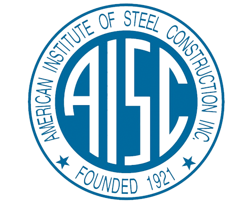
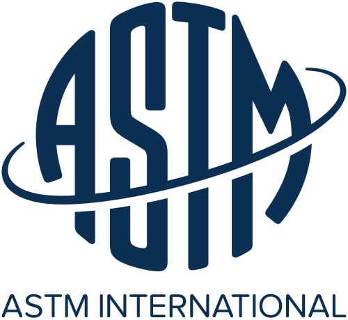

🔧 Structural Steel Engineering Seminar
Types of Welded Joints,
Joint Preparation, and Applications
As per AISC & ASTM Standards


Presenter: [Your Name]
Department: Civil / Structural Engineering
Institution: [Your College/University]
Date: July 2026
What is Welding?
Welding is a fabrication process that joins materials (typically metals or thermoplastics) by causing coalescence. In structural steel construction, welding is the primary method for creating permanent connections between members.
🔥 Importance in Structural Steel
- • Creates rigid, continuous connections
- • Eliminates need for bolt holes (no section reduction)
- • Provides excellent fatigue resistance
- • Allows complex geometric configurations
- • Cost-effective for mass production
Governing Standards
AISC
American Institute of Steel Construction
- Structural steel design requirements
- Welding strength calculations
- Connection detailing standards
- Quality control & inspection
ASTM
ASTM International
- Material specifications (A36, A572, A992)
- Mechanical property requirements
- Chemical composition standards
- Testing & certification protocols
 AWS D1.1
AWS D1.1
Structural Welding Code — Steel
- Welding procedure specifications (WPS)
- Prequalification requirements
- Inspector qualifications
- Acceptance criteria & NDT
Speaker Notes: Emphasize that AISC references AWS D1.1 for all welding requirements. ASTM provides the "what" (material), AISC provides the "how" (design), and AWS provides the "how-to" (execution). Mention that AWS D1.1 is the most widely used welding code in the world for structural steel.
Pre-Weld Requirements
🧹 Surface Cleaning
- Remove rust, mill scale, oil, grease
- Eliminate paint, moisture, and contaminants
- Grind or blast clean to bright metal (SSPC-SP10)
📐 Edge Preparation
- Machine or flame-cut groove edges
- Maintain proper groove angle (per WPS)
- Ensure correct root opening dimension
- Provide root face (land) when specified
📏 Alignment & Fit-Up
- Align plates accurately within tolerance
- Check root gap with feeler gauges
- Use clamps, jigs, or fixtures
- Apply tack welds at proper spacing
🌡️ Preheat & Interpass
- Apply preheat per AWS D1.1 Table 3.2
- Control interpass temperature
- Use backing bars when specified
- Select proper electrode/wire (F-number)
Groove Preparation Diagrams

AWS standard groove preparations with welding symbols
⚠️ Critical Tolerances (AWS D1.1)
| Root Opening | ±1/16" (±1.6mm) |
| Groove Angle | +10° / -5° |
| Root Face | +1/16" / -0 |
| Joint Misalignment | ≤ 10% of thickness |
Speaker Notes: Joint preparation is the single most important factor affecting weld quality. AWS D1.1 Section 5 requires all surfaces to be free of contaminants. Preheat is mandatory for thicker sections and higher strength steels to prevent hydrogen-induced cracking (cold cracking). Always reference the approved Welding Procedure Specification (WPS) for exact parameters.